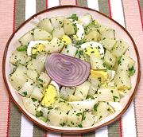

|
Potatoes & Egg SaladItaly - Insalata di Patate e Uova | ||||
| Makes: Effort: Sched: DoAhead: |
2-3/4 # ** 2 hrs Yes |
This simple non-dairy (unless you count the eggs) potato salad has a very clean taste and texture, and a winning combination of ingredients. | |||
|
|
2 5 1 1/2 ------ 5 4 1/2 1/4 ------ |
# lrg T c --- T T t t --- |
Potatoes (1) Eggs Parsley, flat Celery -- Dressing Olive Oil, ExtV Wine Vinegar, white Salt Pepper ---------- |
If you make it for a buffet, make plenty as it will be popular. 2-3/4 pounds should make about 6 salad size servings. Make - (2 hrs - 20 min work)
|